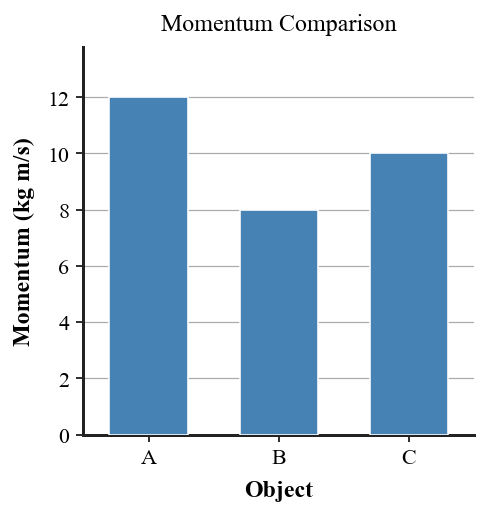
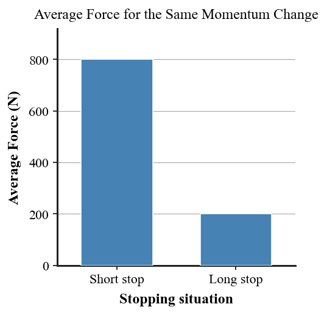

Practice focus: Explain momentum as mass in motion, connect impulse to change in momentum, and reason about collision contact time and force.
Define momentum in words.
Which two quantities determine an object’s momentum?
State the formula for momentum.
Define impulse in words.
Which two quantities determine impulse when the force is approximately constant?
Complete the relationship: impulse equals change in __________.
A football player is brought to a stop in a tackle. Name the quantity that changes because the player’s velocity changes.
A passenger is stopped by an airbag. Identify the feature the airbag increases: mass, stopping time, or initial momentum.
State whether a large mass, high speed, or both can produce large momentum.
A baseball bat contacts a ball for a short time. Choose the best term for force acting over a time interval.
If two objects have the same mass, which one has more momentum: the faster one or the slower one?
Use the bar graph to identify which object has the larger momentum.

A 2 kg cart moves at 6 m/s. Calculate its momentum and include units.
A 0.50 kg ball moves at 12 m/s. Determine its momentum.
A 18 N force acts for 0.5 s. Calculate the impulse.
A ball’s momentum changes from 6 kg·m/s right to 18 kg·m/s right. Determine the impulse on the ball.
A puck’s momentum changes from 14 kg·m/s east to 5 kg·m/s east. Determine the change in momentum and state its direction relative to the original motion.
Rank three objects by momentum: A: 2 kg at 6 m/s, B: 4 kg at 2 m/s, C: 1 kg at 10 m/s. Show enough work to justify the ranking.
| Object | Mass | Speed |
|---|---|---|
| A | 2 kg | 6 m/s |
| B | 4 kg | 2 m/s |
| C | 1 kg | 10 m/s |
Compare catching the same moving egg with stiff hands and with hands that move backward. Which catch produces a longer stopping time and a smaller average force?
An airbag and a rigid dashboard stop the same passenger from the same speed. Explain which produces the smaller average force and why the momentum change can be similar.
Use the contact-time/average-force graph to describe the pattern between stopping time and average force for the same momentum change.

A gymnast increases stopping time from 0.10 s to 0.40 s for the same impulse. Without calculating exact force, predict how the average force changes.
A bat exerts 600 N on a ball for 0.012 s. Calculate the impulse and state what physical quantity changes by that amount.
A 3 kg cart moving 5 m/s stops. Determine the magnitude of its momentum change, then explain why a longer stop lowers average force.
A student says, “A heavier object always has more momentum.” Critique the statement using mass and velocity and give a counterexample.
Explain why bending your knees when landing can reduce injury even though your momentum still changes from moving to nearly zero.
A student claims an airbag makes the passenger’s momentum change disappear. Correct the claim using impulse, stopping time, and average force.
A baseball player follows through after contact begins. Explain how force and contact time connect to impulse and change in the ball’s momentum.
Design a safer package-delivery landing system for a fragile object. Describe the design feature, how it changes stopping time, how it affects average force for a similar momentum change, and one practical tradeoff.
Evaluate two helmet designs: a very rigid thin shell and a shell with a crushable liner. Defend which design better manages a collision using momentum change, impulse, stopping time, and energy transfer.